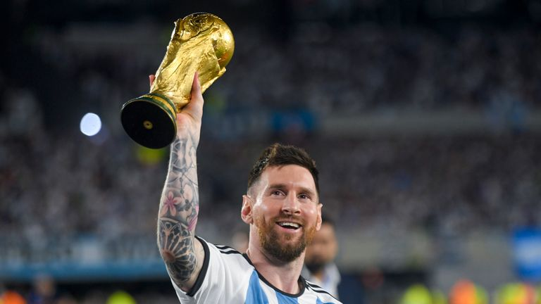

1# O rei Pelé

Pelé, o lendário jogador de futebol brasileiro, acumulou uma lista impressionante de títulos ao longo de sua carreira brilhante. Em sua trajetória, ele conquistou:
- Três Copas do Mundo (1958, 1962 e 1970), tornando-se o único jogador a vencer o torneio mais prestigioso do futebol por três vezes.
- Duas Copas Libertadores da América (1962 e 1963) com o Santos FC, demonstrando sua habilidade excepcional na competição continental.
- Um Campeonato Brasileiro (1965) e uma Taça Brasil (1961) com o Santos FC, consolidando-se como uma referência no futebol nacional.
- Seis títulos do Campeonato Paulista com o Santos FC, ajudando a equipe a dominar o cenário estadual.
- Inúmeros títulos amistosos, incluindo a Taça Rivadavia Corrêa Meyer e a Taça do Atlântico, demonstrando sua excelência em competições internacionais.
2# Diego "El Dios" Maradona

Diego Maradona, o icônico jogador de futebol argentino, deixou um legado notável com sua conquista de vários títulos ao longo de sua carreira. Entre seus feitos mais importantes, estão:
- A Copa do Mundo de 1986, onde Maradona liderou a seleção argentina à vitória com performances inesquecíveis, incluindo o famoso "Gol da Mão de Deus" e o gol solo contra a Inglaterra nas quartas de final.
- O Campeonato Italiano conquistado duas vezes com o Napoli, nos anos de 1986-1987 e 1989-1990, levando o clube a um status de destaque no cenário futebolístico.
- A Copa da Itália, que Maradona venceu com o Napoli em 1987 e 1990, trazendo títulos domésticos para a equipe do sul da Itália.
- A Supercopa Italiana, conquistada por Maradona em 1990 com o Napoli, coroando uma era de sucesso para o clube.
- A Copa UEFA de 1989, onde Maradona liderou o Napoli à sua primeira conquista europeia, mostrando sua habilidade excepcional em cenários internacionais.
3# Lionel "La Pulga" Messi
Lionel Messi, o lendário jogador de futebol argentino, acumulou uma impressionante lista de títulos ao longo de sua carreira fenomenal. Entre suas conquistas mais notáveis estão:
- Dez títulos da La Liga com o Barcelona, demonstrando sua dominância no futebol espanhol.
- Quatro títulos da Liga dos Campeões da UEFA, solidificando sua reputação como um dos melhores jogadores do mundo em competições europeias.
- Sete Copas do Rei, fornecendo ao Barcelona um domínio significativo no futebol doméstico espanhol.
- A Copa do Mundo de 2022, onde Messi foi considerado o melhor jogador da competicao ao tirar a Argentina da fila de titulo da copa do mundo.
- Sete Bolas de Ouro da FIFA, reconhecendo sua excelência individual e sua contribuição excepcional para o esporte.
4# Cristiano "Papai Cris" Ronaldo

Cristiano Ronaldo, o renomado jogador de futebol português, acumulou uma impressionante coleção de títulos ao longo de sua carreira brilhante. Entre suas conquistas notáveis estão:
- Sete títulos da liga nacional, conquistados com o Manchester United, Real Madrid e Juventus, demonstrando sua consistência e sucesso em diferentes ligas europeias.
- Cinco títulos da Liga dos Campeões da UEFA, incluindo suas vitórias com o Manchester United e o Real Madrid, mostrando seu domínio em competições europeias de elite.
- Quatro títulos da Copa do Mundo de Clubes da FIFA, que Ronaldo ganhou com o Manchester United e o Real Madrid, destacando sua excelência no cenário mundial.
- Quatro títulos da Eurocopa com a seleção portuguesa, incluindo a conquista histórica em 2016, demonstrando seu impacto e liderança em nível internacional.
- Quatro Bolas de Ouro da FIFA, reconhecendo sua excepcionalidade individual e seu status como um dos melhores jogadores do mundo.
5# Ronaldo "Fenomeno" Nazario
Ronaldo "Fenômeno", o lendário jogador de futebol brasileiro, acumulou uma impressionante lista de títulos ao longo de sua carreira brilhante. Entre suas conquistas mais notáveis estão:
- Duas Copas do Mundo (1994 e 2002), onde Ronaldo foi peça fundamental para a seleção brasileira conquistar o título máximo do futebol mundial.
- Três vezes campeão da FIFA World Player of the Year, reconhecendo sua excelência e domínio no esporte.
- Um título da Copa das Confederações com a seleção brasileira em 1997, demonstrando sua capacidade de vencer em competições internacionais.
- Um título da Copa América com a seleção brasileira em 1997, reafirmando sua habilidade de liderar o país em conquistas continentais.
- Um título da Copa América com a seleção brasileira em 1997, reafirmando sua habilidade de liderar o país em conquistas continentais.
© Gustavo Fonseca - 2023